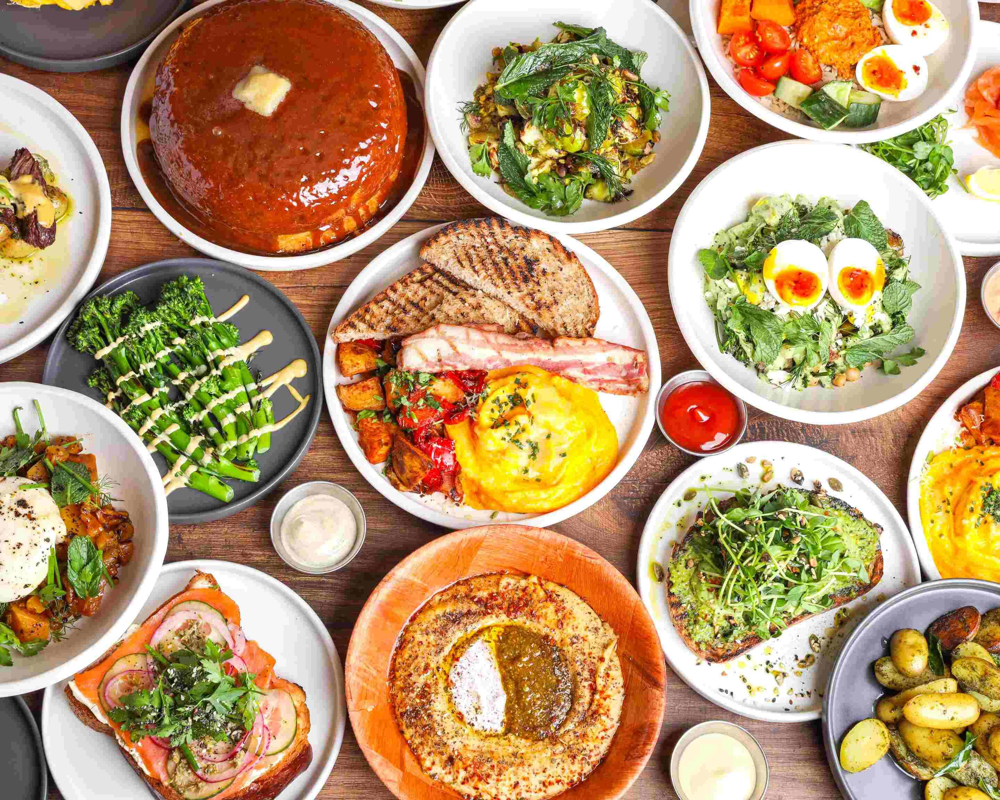

The essence behind the restaurant is in its name: Sunday in Brooklyn. Everyone has their day. Ours was Sunday. We’ve taken our favourite day of the week, a day of comfort, adventures, and family, and made it the mission of Sunday. We care deeply about what and who we serve. This is at the heart of Sunday in Brooklyn.
For Chef Jamie Young, this sentiment is translated seamlessly into his menu and his kitchen. “We’re using modern concepts to create a casual fine dining experience. Everything from the menu’s format to the event's offering, fosters the idea of shared experiences and conversations around the dinner table.” Young’s thoughtful components with clean, satisfying flavours define Sunday’s progressive seasonal Brooklyn-style food with a focus on sustainability.
Monday - Friday:
9.00am - 4.30pm
Saturday*:
8.30 - 5:00pm
Sunday
8.30am - 8.00pm
*We primarily take walk-ins on Saturday and Sunday Brunch
Thursday to Saturday:
5.30am - 10.00pm
info@sundayinbk.co.uk
02076301060